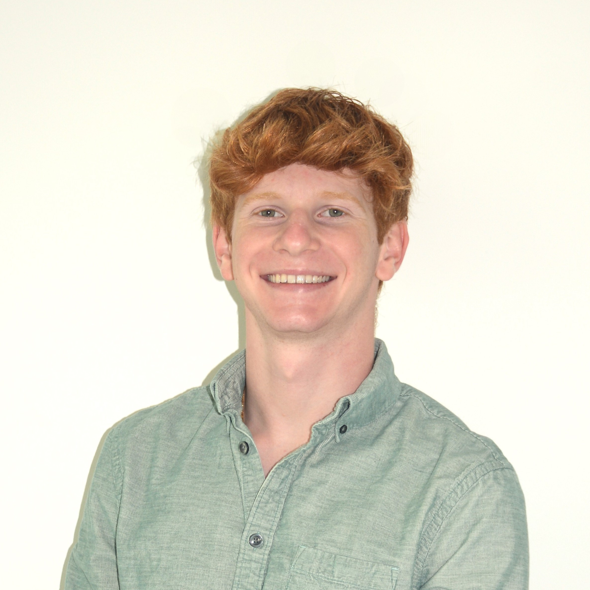

Hi, I’m Alex Mullen, originally from South Florida and currently pursuing an Special Concentration in Sociotechnical Innovation at Harvard College. I am passionate about innovation, leadership, and technology, with a strong foundation in Computer Science, Engineering, and Entrepreneurship.
I’ve founded, managed, and held executive positions on several successful ventures, as can be found on my LinkedIn profile attached to this page. My background blends technical expertise and creative strategy with global perspectives.
Beyond academics, I’m an avid athlete and traveler with interests in boxing, snowboarding, sailing, weightlifting, SCUBA diving, fishing, drone piloting, programming, venture capital, private equity, international business, consulting, and music. I’m eager to connect with forward-thinking organizations and professionals who value innovation, analytical problem-solving, and cross-disciplinary collaboration to create meaningful impact.
Phone: (561) 223-1955
Email: alexmullen@college.harvard.edu
LinkedIn: View Profile
Resume: View Resume